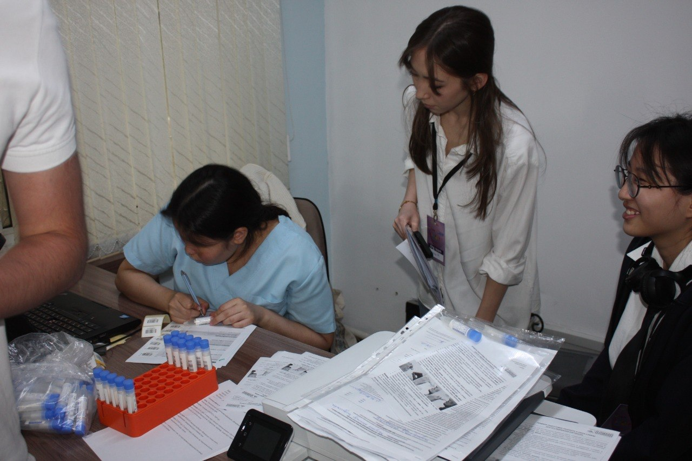
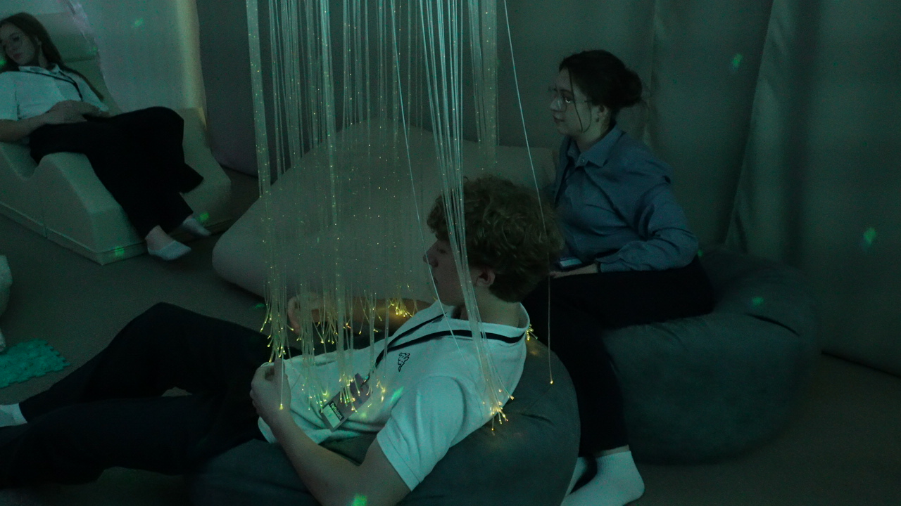
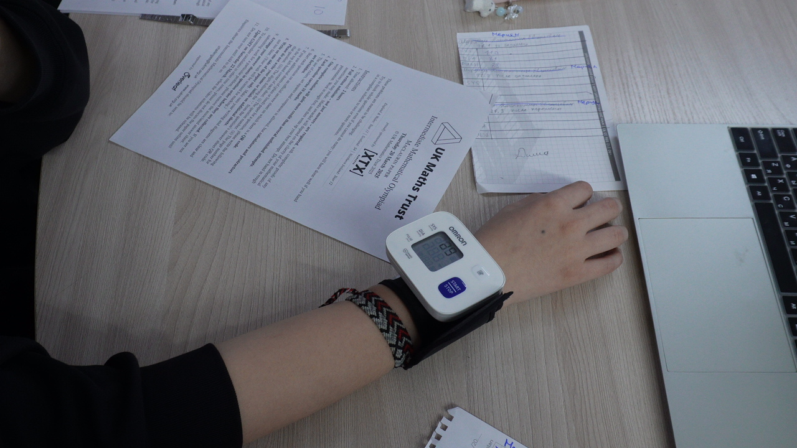
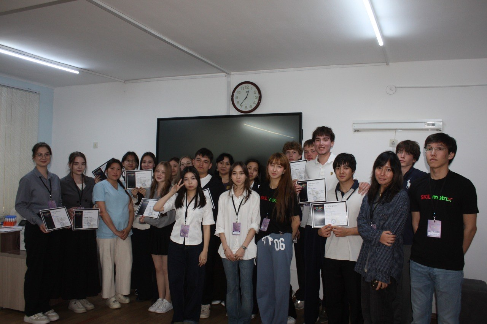

Мы изучили, помогает ли сенсорная комната восстанавливаться после стресса эффективнее, чем обычная школьная перемена.
После контрольных и экзаменов ученики часто продолжают испытывать стресс. Обычная перемена не всегда позволяет полноценно восстановиться из-за шума и обсуждения заданий.
Используя биологические показатели стресса и обратную связь учеников, мы сравнили влияние двух разных сред на восстановление после академической нагрузки.





Участники были разделены на две группы:
Мы измеряли уровень кортизола, пульс, давление и собирали обратную связь участников.
Участников разделили на две равные группы и поставили в одинаковую стрессовую ситуацию — разница была только в среде восстановления: сенсорная комната или обычная перемена.
Группа 1 — сенсорная комната

Группа 2 — обычная школьная перемена

Лаборатория KDL Olymp помогла провести анализ кортизола, организовала сбор образцов слюны и обработку результатов. Благодаря этому исследование включало объективные биологические показатели стресса.
Восстановление после стресса: давление и кортизол слюны. Исследование проведено совместно с лабораторией КДЛ Олимп.
Кортизол слюны
Давление
Субъективная оценка восстановления (1–5)